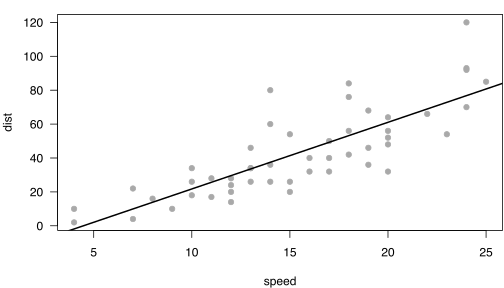

{kind=link}
remotes::install_github("yihui/xaringan")Presentation Ninja
⚔
with xaringan
background-image: url(https://upload.wikimedia.org/wikipedia/commons/b/be/Sharingan_triple.svg)
???
Image credit: Wikimedia Commons
class: inverse, center, middle
Get Started
Hello World
Install the xaringan package from Github:
–
You are recommended to use the RStudio IDE, but you do not have to.
- Create a new R Markdown document from the menu
File -> New File -> R Markdown -> From Template -> Ninja Presentation;1
–
- Click the
Knitbutton to compile it;
–
- or use the RStudio Addin2 “Infinite Moon Reader” to live preview the slides (every time you update and save the Rmd document, the slides will be automatically reloaded in RStudio Viewer.
.footnote[ [1] 中文用户请看这份教程
[2] See #2 if you do not see the template or addin in RStudio. ]
Hello Ninja
As a presentation ninja, you certainly should not be satisfied by the “Hello World” example. You need to understand more about two things:
The remark.js library;
The xaringan package;
Basically xaringan injected the chakra of R Markdown (minus Pandoc) into remark.js. The slides are rendered by remark.js in the web browser, and the Markdown source needed by remark.js is generated from R Markdown (knitr).
remark.js
You can see an introduction of remark.js from its homepage. You should read the remark.js Wiki at least once to know how to
create a new slide (Markdown syntax* and slide properties);
format a slide (e.g. text alignment);
configure the slideshow;
and use the presentation (keyboard shortcuts).
It is important to be familiar with remark.js before you can understand the options in xaringan.
.footnote[[*] It is different with Pandoc’s Markdown! It is limited but should be enough for presentation purposes. Come on… You do not need a slide for the Table of Contents! Well, the Markdown support in remark.js may be improved in the future.]
class: inverse, middle, center
Using xaringan
xaringan
Provides an R Markdown output format xaringan::moon_reader as a wrapper for remark.js, and you can use it in the YAML metadata, e.g.
---
title: "A Cool Presentation"
output:
xaringan::moon_reader:
yolo: true
nature:
autoplay: 30000
---See the help page ?xaringan::moon_reader for all possible options that you can use.
remark.js vs xaringan
Some differences between using remark.js (left) and using xaringan (right):
.pull-left[ 1. Start with a boilerplate HTML file;
Plain Markdown;
Write JavaScript to autoplay slides;
Manually configure MathJax;
Highlight code with
*;Edit Markdown source and refresh browser to see updated slides; ]
.pull-right[ 1. Start with an R Markdown document;
R Markdown (can embed R/other code chunks);
Provide an option
autoplay;MathJax just works;*
Highlight code with
{{}};The RStudio addin “Infinite Moon Reader” automatically refreshes slides on changes; ]
.footnote[[*] Not really. See next page.]
Math Expressions
You can write LaTeX math expressions inside a pair of dollar signs, e.g. $+$ renders \(\alpha+\beta\). You can use the display style with double dollar signs:
$$\bar{X}=\frac{1}{n}\sum_{i=1}^nX_i$$\[\bar{X}=\frac{1}{n}\sum_{i=1}^nX_i\]
Limitations:
The source code of a LaTeX math expression must be in one line, unless it is inside a pair of double dollar signs, in which case the starting
$$must appear in the very beginning of a line, followed immediately by a non-space character, and the ending$$must be at the end of a line, led by a non-space character;There should not be spaces after the opening
$or before the closing$.Math does not work on the title slide (see #61 for a workaround).
R Code
# a boring regression
fit = lm(dist ~ 1 + speed, data = cars)
coef(summary(fit))# Estimate Std. Error t value Pr(>|t|)
# (Intercept) -17.579095 6.7584402 -2.601058 1.231882e-02
# speed 3.932409 0.4155128 9.463990 1.489836e-12dojutsu = c('地爆天星', '天照', '加具土命', '神威', '須佐能乎', '無限月読')
grep('天', dojutsu, value = TRUE)# [1] "地爆天星" "天照"R Plots
par(mar = c(4, 4, 1, .1))
plot(cars, pch = 19, col = 'darkgray', las = 1)
abline(fit, lwd = 2)
Tables
If you want to generate a table, make sure it is in the HTML format (instead of Markdown or other formats), e.g.,
knitr::kable(head(iris), format = 'html')| Sepal.Length | Sepal.Width | Petal.Length | Petal.Width | Species |
|---|---|---|---|---|
| 5.1 | 3.5 | 1.4 | 0.2 | setosa |
| 4.9 | 3.0 | 1.4 | 0.2 | setosa |
| 4.7 | 3.2 | 1.3 | 0.2 | setosa |
| 4.6 | 3.1 | 1.5 | 0.2 | setosa |
| 5.0 | 3.6 | 1.4 | 0.2 | setosa |
| 5.4 | 3.9 | 1.7 | 0.4 | setosa |
HTML Widgets
I have not thoroughly tested HTML widgets against xaringan. Some may work well, and some may not. It is a little tricky.
Similarly, the Shiny mode (runtime: shiny) does not work. I might get these issues fixed in the future, but these are not of high priority to me. I never turn my presentation into a Shiny app. When I need to demonstrate more complicated examples, I just launch them separately. It is convenient to share slides with other people when they are plain HTML/JS applications.
See the next page for two HTML widgets.
library(leaflet)
leaflet() %>% addTiles() %>% setView(-93.65, 42.0285, zoom = 17)DT::datatable(
head(iris, 10),
fillContainer = FALSE, options = list(pageLength = 8)
)Some Tips
Do not forget to try the
yolooption ofxaringan::moon_reader.output: xaringan::moon_reader: yolo: true
Some Tips
Slides can be automatically played if you set the
autoplayoption undernature, e.g. go to the next slide every 30 seconds in a lightning talk:output: xaringan::moon_reader: nature: autoplay: 30000If you want to restart the play after it reaches the last slide, you may set the sub-option
loopto TRUE, e.g.,output: xaringan::moon_reader: nature: autoplay: interval: 30000 loop: true
Some Tips
A countdown timer can be added to every page of the slides using the
countdownoption undernature, e.g. if you want to spend one minute on every page when you give the talk, you can set:output: xaringan::moon_reader: nature: countdown: 60000Then you will see a timer counting down from
01:00, to00:59,00:58, … When the time is out, the timer will continue but the time turns red.
Some Tips
The title slide is created automatically by xaringan, but it is just another remark.js slide added before your other slides.
The title slide is set to
class: center, middle, inverse, title-slideby default. You can change the classes applied to the title slide with thetitleSlideClassoption ofnature(title-slideis always applied).output: xaringan::moon_reader: nature: titleSlideClass: [top, left, inverse]
–
If you’d like to create your own title slide, disable xaringan’s title slide with the
seal = FALSEoption ofmoon_reader.output: xaringan::moon_reader: seal: false
Some Tips
There are several ways to build incremental slides. See this presentation for examples.
The option
highlightLines: trueofnaturewill highlight code lines that start with*, or are wrapped in{{ }}, or have trailing comments#<<;output: xaringan::moon_reader: nature: highlightLines: trueSee examples on the next page.
Some Tips
.pull-left[ An example using a leading *:
```r
if (TRUE) {
** message("Very important!")
}
```Output:
if (TRUE) {
* message("Very important!")
}This is invalid R code, so it is a plain fenced code block that is not executed. ]
.pull-right[ An example using {{}}:
```{r tidy=FALSE}
if (TRUE) {
*{{ message("Very important!") }}
}
```Output:
if (TRUE) {
{{ message("Very important!") }}
}Very important!It is valid R code so you can run it. Note that {{}} can wrap an R expression of multiple lines. ]
Some Tips
An example of using the trailing comment #<< to highlight lines:
```{r tidy=FALSE}
library(ggplot2)
ggplot(mtcars) +
aes(mpg, disp) +
geom_point() + #<<
geom_smooth() #<<
```Output:
library(ggplot2)
ggplot(mtcars) +
aes(mpg, disp) +
geom_point() + #<<
geom_smooth() #<<Some Tips
When you enable line-highlighting, you can also use the chunk option highlight.output to highlight specific lines of the text output from a code chunk. For example, highlight.output = TRUE means highlighting all lines, and highlight.output = c(1, 3) means highlighting the first and third line.
```{r, highlight.output=c(1, 3)}
head(iris)
``` Sepal.Length Sepal.Width Petal.Length Petal.Width Species
1 5.1 3.5 1.4 0.2 setosa
2 4.9 3.0 1.4 0.2 setosa
3 4.7 3.2 1.3 0.2 setosa
4 4.6 3.1 1.5 0.2 setosa
5 5.0 3.6 1.4 0.2 setosa
6 5.4 3.9 1.7 0.4 setosaQuestion: what does highlight.output = c(TRUE, FALSE) mean? (Hint: think about R’s recycling of vectors)
Some Tips
To make slides work offline, you need to download a copy of remark.js in advance, because xaringan uses the online version by default (see the help page
?xaringan::moon_reader).You can use
xaringan::summon_remark()to download the latest or a specified version of remark.js. By default, it is downloaded tolibs/remark-latest.min.js.Then change the
chakraoption in YAML to point to this file, e.g.output: xaringan::moon_reader: chakra: libs/remark-latest.min.jsIf you used Google fonts in slides (the default theme uses Yanone Kaffeesatz, Droid Serif, and Source Code Pro), they won’t work offline unless you download or install them locally. The Heroku app google-webfonts-helper can help you download fonts and generate the necessary CSS.
Macros
remark.js allows users to define custom macros (JS functions) that can be applied to Markdown text using the syntax
![:macroName arg1, arg2, ...]or. For example, before remark.js initializes the slides, you can define a macro namedscale:remark.macros.scale = function (percentage) { var url = this; return '<img src="' + url + '" style="width: ' + percentage + '" />'; };Then the Markdown text
will be translated to
<img src="image.jpg" style="width: 50%" />
Macros (continued)
To insert macros in xaringan slides, you can use the option
beforeInitunder the optionnature, e.g.,output: xaringan::moon_reader: nature: beforeInit: "macros.js"You save your remark.js macros in the file
macros.js.The
beforeInitoption can be used to insert arbitrary JS code beforeremark.create(). Inserting macros is just one of its possible applications.
CSS
Among all options in xaringan::moon_reader, the most challenging but perhaps also the most rewarding one is css, because it allows you to customize the appearance of your slides using any CSS rules or hacks you know.
You can see the default CSS file here. You can completely replace it with your own CSS files, or define new rules to override the default. See the help page ?xaringan::moon_reader for more information.
CSS
For example, suppose you want to change the font for code from the default “Source Code Pro” to “Ubuntu Mono”. You can create a CSS file named, say, ubuntu-mono.css:
@import url(https://fonts.googleapis.com/css?family=Ubuntu+Mono:400,700,400italic);
.remark-code, .remark-inline-code { font-family: 'Ubuntu Mono'; }Then set the css option in the YAML metadata:
output:
xaringan::moon_reader:
css: ["default", "ubuntu-mono.css"]Here I assume ubuntu-mono.css is under the same directory as your Rmd.
See yihui/xaringan#83 for an example of using the Fira Code font, which supports ligatures in program code.
CSS (with Sass)
xaringan also supports Sass support via rmarkdown. Suppose you want to use the same color for different elements, e.g., first heading and bold text. You can create a .scss file, say mytheme.scss, using the sass syntax with variables:
$mycolor: #ff0000;
.remark-slide-content > h1 { color: $mycolor; }
.remark-slide-content strong { color: $mycolor; }Then set the css option in the YAML metadata using this file placed under the same directory as your Rmd:
output:
xaringan::moon_reader:
css: ["default", "mytheme.scss"]This requires rmarkdown >= 2.8 and the sass package. You can learn more about rmarkdown and sass support in this blog post and in sass overview vignette.
Themes
Don’t want to learn CSS? Okay, you can use some user-contributed themes. A theme typically consists of two CSS files foo.css and foo-fonts.css, where foo is the theme name. Below are some existing themes:
names(xaringan:::list_css()) [1] "chocolate-fonts" "chocolate" "default-fonts"
[4] "default" "duke-blue" "fc-fonts"
[7] "fc" "glasgow_template" "hygge-duke"
[10] "hygge" "ki-fonts" "ki"
[13] "kunoichi" "lucy-fonts" "lucy"
[16] "metropolis-fonts" "metropolis" "middlebury-fonts"
[19] "middlebury" "nhsr-fonts" "nhsr"
[22] "ninjutsu" "rladies-fonts" "rladies"
[25] "robot-fonts" "robot" "rutgers-fonts"
[28] "rutgers" "shinobi" "tamu-fonts"
[31] "tamu" "uio-fonts" "uio"
[34] "uo-fonts" "uo" "uol-fonts"
[37] "uol" "useR-fonts" "useR"
[40] "uwm-fonts" "uwm" "wic-fonts"
[43] "wic" Themes
To use a theme, you can specify the css option as an array of CSS filenames (without the .css extensions), e.g.,
output:
xaringan::moon_reader:
css: [default, metropolis, metropolis-fonts]If you want to contribute a theme to xaringan, please read this blog post.
background-image: url(https://upload.wikimedia.org/wikipedia/commons/b/be/Sharingan_triple.svg) background-size: 100px background-position: 90% 8%
Naruto terminology
The xaringan package borrowed a few terms from Naruto, such as
Sharingan (写輪眼; the package name)
The moon reader (月読; an attractive R Markdown output format)
Chakra (查克拉; the path to the remark.js library, which is the power to drive the presentation)
Nature transformation (性質変化; transform the chakra by setting different options)
The infinite moon reader (無限月読; start a local web server to continuously serve your slides)
The summoning technique (download remark.js from the web)
You can click the links to know more about them if you want. The jutsu “Moon Reader” may seem a little evil, but that does not mean your slides are evil.
class: center
Hand seals (印)
Press h or ? to see the possible ninjutsu you can use in remark.js.

class: center, middle
Thanks!
Slides created via the R package xaringan.
The chakra comes from remark.js, knitr, and R Markdown.